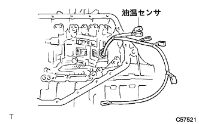
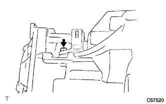
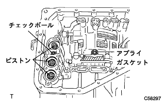
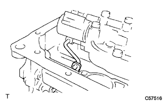
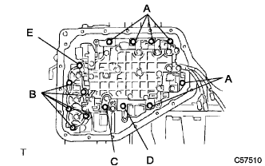
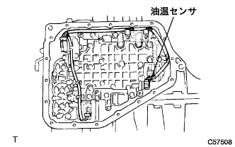
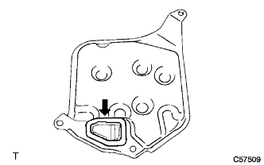
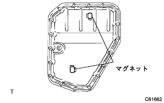
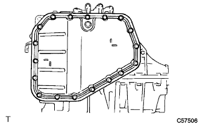

Installation of transmission wire (U441E) |
| 1. Trans mission wire installation |
|  |
Apply auto fluid type T-IV to the O-ring of the transmission wire (with oil temperature sensor).
Pass the transmission wire (with oil temperature sensor) to the automatic transxle.
|  |
In the bolt, fix the transmission wire (with an oil temperature sensor).
| 2. Trans mission valve body installation |
|  |
Confirm that the position in the figure contains a check ball, applied gasket and each piston.
|  |
Attach a manual valve link and attach a valve body ASSY.
|  |
Tighten 14 bolts evenly.
| bolt | Length (mm) |
|---|---|
| A | 20 |
| B | 28 |
| C | 49 |
| D | 36 |
| E | 40 |
|  |
Attach each solenoid connector and oil temperature sensor.
| 3. Valve body oil strainer Assy installation |
|  |
Attach a new gasket to the oil strainer.
Attach the oil strainer with three bolts.
| 4. Automatic transformer axle oil bread SUB-ASSY (ATM) Installation |
|  |
Attach the two oil cleaner magnet to the position of the figure.
|  |
Attach the oil pan with 18 bolts.
| 5. Automatic Transxle ASSY installation |
reference)| 6. Tascan-at learning value Initialization |
Use SST (TASCAN) to perform the operation according to the screen display, select [Work Support] in the main menu, and select Trans Mission in the work support category.
Select [AT learning value initialization] on the screen display and initialize the AT learning value.